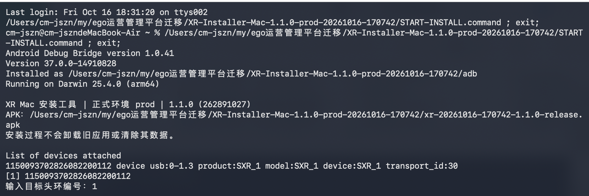
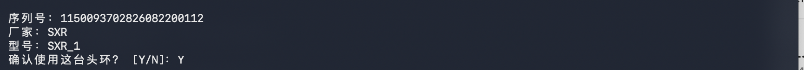
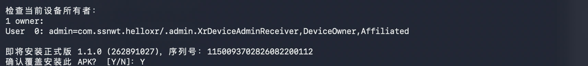
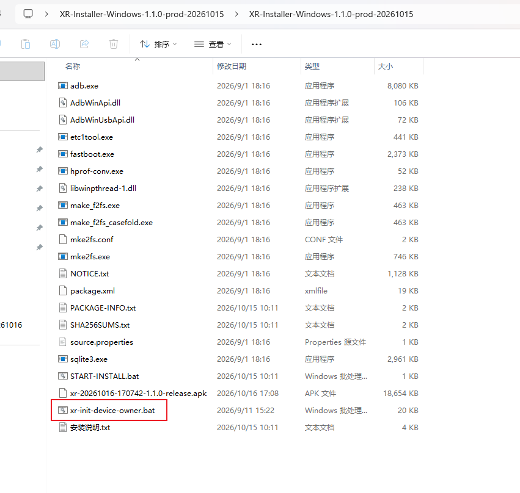
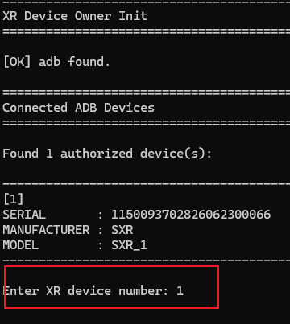
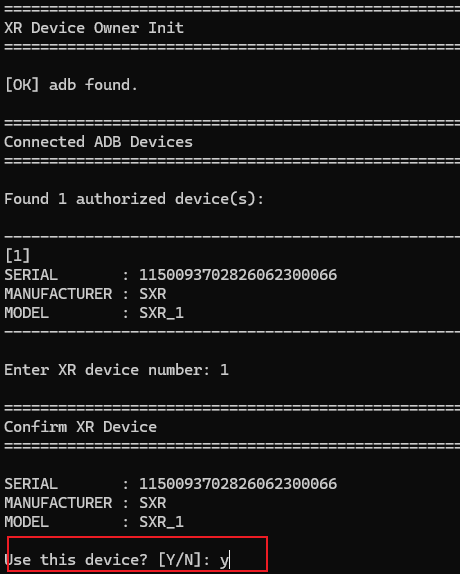
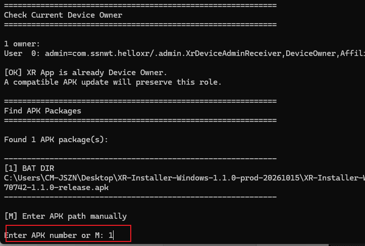
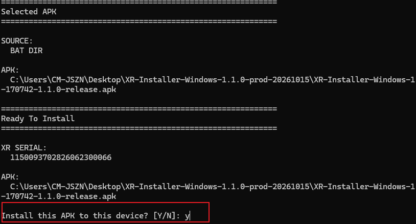
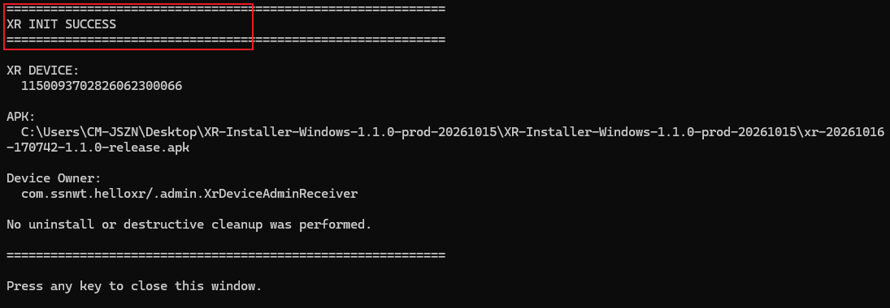

安装操作 / MAC
用 Mac，
给头环安装 App。
第一次操作也可以跟着做。准备好头环和数据线，
按下面 6 步完成安装与初始化。
App 安装到头环。Mac 负责运行安装工具；安装和 init 初始化会一起完成。
开始前
先解压，文件放在一起
向负责人取得 Mac 版安装工具 ZIP。在“访达”中找到它，双击 ZIP 解压，再打开解压后的文件夹。
XR-Installer-Mac-1.1.0-prod-20261016-170742.zip如果你已经看到下方截图那样的文件列表，就已经解压，可以继续下一步。
一台 Mac
工具包已自带 ADB
已开机的头环
建议先保证电量充足
可传输数据的 USB 线
仅充电的数据线无法安装
保留文件夹内全部文件。只双击后面指定的安装入口，不用单独打开 APK、adb 或 init 文件。
连接设备
用 USB 线连接 Mac 和头环
- 在头环上打开开发者选项 → USB 调试。不同固件的入口可能不同，找不到时联系设备负责人。
- 用 USB 数据线连接 Mac，一次只连接一台待安装头环。
- 查看头环画面。如果出现“允许 USB 调试”，选择允许 / 确定。


授权弹窗有时会在运行安装工具后才出现。若工具提示没有已授权设备，先在头环上允许，再重新打开安装入口。
打开工具
双击这个文件
START-INSTALL.command只需要打开它在解压后的文件夹里找到它，双击打开。正常情况下，会出现一个显示文字的“终端”窗口。

这个入口会自动运行 xr-init-device-owner.sh。
按下一步在系统设置中允许打开。
第一次使用时可能遇到
被拦截？到系统设置里允许
如果显示“无法验证开发者”或“Apple 无法检查是否包含恶意软件”，先核对这是负责人提供的工具包，再按下面的顺序操作。没有弹窗、工具能正常运行时，直接跳到第 5 步。


安装脚本和 adb 是两个文件，可能分别弹窗。对本工具包里的 adb 重复上面的放行步骤。若原终端已显示失败，关闭失败窗口，再双击 START-INSTALL.command 重新运行。
这里仅允许本次工具运行，无需关闭系统安全保护。如果提示文件“已损坏”“将损坏你的电脑”，或公司电脑不允许修改设置，请停止并联系负责人。
终端操作
输入编号，再按提示确认
终端会显示可用设备。每次输入后，都按一下键盘上的回车键（Enter / Return）。
下面 4 张是本次 Mac 实际安装的终端截图。这台头环已经设置过设备所有者，因此本次为覆盖安装。截图较宽，手机可点击图片放大查看。
1. 选择目标头环
看到“输入目标头环编号”时，输入列表中目标头环前面的编号，再按回车。图中只有一台，所以输入 1。

2. 确认是这台头环
核对序列号、厂家和型号；在“确认使用这台头环？”后输入 Y，按回车。

3. 确认覆盖安装
工具会先检查设备所有者。核对显示的版本 1.1.0 (262891027) 和目标设备后，在“确认覆盖安装此 APK？”处输入 Y，按回车。

4. 首次设备：按提示设置设备所有者
如果新头环出现“将 XR App 设置为设备所有者？ [Y/N]”，确认属于本项目管理后输入 Y，按回车。本次截图中的头环已设置过，因此没有这一询问，直接进入安装完成。
“设备所有者”是本项目设备管理所需的初始化设置。第一次通常需要确认；后续同签名覆盖升级会保留这一身份。
完成检查
看到成功提示，再看一眼头环
终端应出现
XR INIT SUCCESSAPK 安装和设备所有者核验完成，启动命令已发送。- 看一下头环画面，确认 XR 采集 App 已打开。
- 回到 Mac，按回车结束安装窗口。
- 随后按项目要求进行配网、绑定、登录、录制与上传验证。
USB 安装本身不需要联网。后续业务使用还需要配套手机控制 App、正式账号和可访问服务器的 Wi-Fi。
卡住时看这里
常见问题
“仍要打开”找不到在哪里？
先重新双击一次安装入口，让系统产生刚才那条拦截记录，再打开“系统设置 → 隐私与安全性”，向下滚动查看“安全性”区域。如果工具已正常运行，就不需要放行；如果这是公司管控的 Mac，请联系 IT 或负责人。
提示“没有已授权设备”，怎么办？
查看头环是否有 USB 调试授权弹窗，点允许；确认 USB 调试已开启，数据线能传数据，然后重新运行入口。可换一个 USB 接口或数据线再试。
要不要再双击 xr-init-device-owner.sh？
不用。START-INSTALL.command 会自动调用 init 脚本，安装与初始化在同一次流程里完成。
出现 XR INIT FAILED，怎么办？
先保留终端窗口，截图最后的具体错误给负责人。失败可能发生在 APK 已安装之后，不代表已自动回滚。先不要卸载旧 App、清除数据或恢复出厂。日志位于 Mac 的 ~/Library/Logs/XR-Installer/；需要时由负责人协助取出。
提示签名不兼容、版本更高或已有其他设备所有者？
停止操作，将错误信息交给负责人。本工具遇到这些情况会停止，不会自动卸载旧应用或强制降级。
头环没有“开发者选项”或设置设备所有者失败？
不同固件的开放方式可能不同，请联系设备负责人；首次设置设备所有者还会受到系统账户、工作资料和固件策略限制。不要自行恢复出厂。
安装操作 / WINDOWS
用 Windows，
给头环安装 App。
第一次操作也可以跟着做。准备好头环和数据线，
按下面 6 步完成安装与初始化。
双击 xr-init-device-owner.bat，即可开始安装和 init 初始化。
开始前
下载 Windows 包，完整解压
向负责人取得 Windows 版工具 ZIP，下载到电脑。右键压缩包，选择全部解压缩或解压软件中的“解压到”，再打开解压后的文件夹。
XR-Installer-Windows-1.1.0-prod-20261015.zip文件夹名仍含 20261015；本次对应的 APK 是 20261016 新包。请以第 5 步的 APK 文件名为准。
Windows 10 / 11 电脑
64 位系统，包内已有 ADB
已开机的头环
建议先保证电量充足
可传输数据的 USB 线
仅充电的线无法安装
完整解压后再运行，不要在压缩软件的预览窗口里直接双击脚本。保留文件夹内全部文件，建议放在 C:\XR-Install 等简单路径中，路径不要包含感叹号 !。
连接设备
连接头环侧面的 USB 接口
- 头环开机，开启开发者选项 → USB 调试。找不到入口时联系设备负责人。
- 按下面实拍，将 USB 线插入头环侧面接口，另一端接电脑。一次只连接一台待安装头环。
- 如果头环出现“允许 USB 调试”，选择允许 / 确定。
USB 授权有时在启动安装工具后才出现。若工具找不到设备，先查看头环画面并同意授权，再重新运行。
打开工具
双击红框里的 init 文件
xr-init-device-owner.batWindows 安装入口继续打开文件夹，直到看到下图这样的一整列文件。双击红框中的 xr-init-device-owner.bat，会出现黑色命令窗口。

这个 init 脚本会继续执行 APK 安装和设备所有者检查，不用额外打开 adb.exe 或 APK。
先选对设备
输入设备编号，再输入 Y
命令窗口会依次出现下面的提示。每输入一次，都要按一下回车键（Enter）。
1. 输入目标头环编号
看到 Enter XR device number 时，输入目标头环前面的编号，再按回车。图中只有一台，所以输入 1。

2. 确认目标设备
看到 Use this device? 时，核对设备信息，输入 Y，再按回车。

如果显示多台设备，要按目标头环实际编号选择，不要直接照抄示例中的 1。大小写 y / Y 均可。
选择安装文件
选择 APK，再确认安装
工具接下来会列出 APK。核对本次文件名是：
xr-20261016-170742-1.1.0-release.apk1. 选择本次 APK
看到 Enter APK number or M 时，输入目标 APK 前面的编号。只有本次文件时，通常输入 1，再按回车。

2. 确认安装
看到 Install this APK to this device? 时，核对设备和 APK 文件名，输入 Y，再按回车，等待安装。

3. 首次设备：按提示设置设备所有者
新设备若出现 Set XR App as Device Owner?，确认属于本项目管理后输入 Y，再按回车。本次原教程中的设备已设置过，因此没有这条询问。
“Device Owner”就是设备所有者，用于本项目的设备管理。如果头环已经设置为本 XR App 的设备所有者，工具会跳过首次设置的确认步骤。
Windows 原脚本在签名不兼容时可能提示 Uninstall the existing XR App, erase its data, and continue?。此时停止并联系负责人，不要通过卸载解决。
完成检查
确认出现成功提示
命令窗口应出现
XR INIT SUCCESS表示安装及设备所有者检查完成，应用启动命令已发送。
- 查看头环画面，确认 XR 采集 App 已打开。
- 返回电脑，按窗口提示按任意键关闭。
- 随后按项目要求完成配网、绑定、登录、录制和上传验证。
USB 安装本身不需要联网；业务使用还需要配套手机控制 App、正式账号和可访问服务器的 Wi-Fi。
卡住时看这里
常见问题
没有找到设备，或提示 No authorized ADB device？
检查头环是否开机、USB 调试是否开启、头环画面是否有待确认的 USB 授权。换可传数据的线或 USB 接口再试。如果 Windows 仍无法识别，联系负责人确认厂商 USB / ADB 驱动。
文件夹里有 START-INSTALL.bat，应该打开哪一个？
本次 Windows 原教程红框指定的是 xr-init-device-owner.bat，请按第 3 步直接打开它。当前 Windows 包的 START-INSTALL.bat 仍检查旧 APK 文件名，可能提示文件缺失。
看到窗口一闪而过，或者找不到 adb？
确认已完整解压，脚本和 adb.exe 在同一个文件夹；不要只复制一个脚本出来运行，也不要在 ZIP 预览窗口中运行。仍失败时，将现象交给负责人处理。
出现 XR INIT FAILED、签名冲突或版本更高？
保留命令窗口并截图具体错误给负责人；如果询问卸载并清除数据，输入 N。失败不一定表示 APK 没有安装，不要自行清除数据或恢复出厂。
设备所有者设置失败，或者已有其他管理程序？
停止安装并联系负责人。首次设置会受到系统账户、工作资料和固件策略影响，不要自行恢复出厂或移除其他设备管理程序。